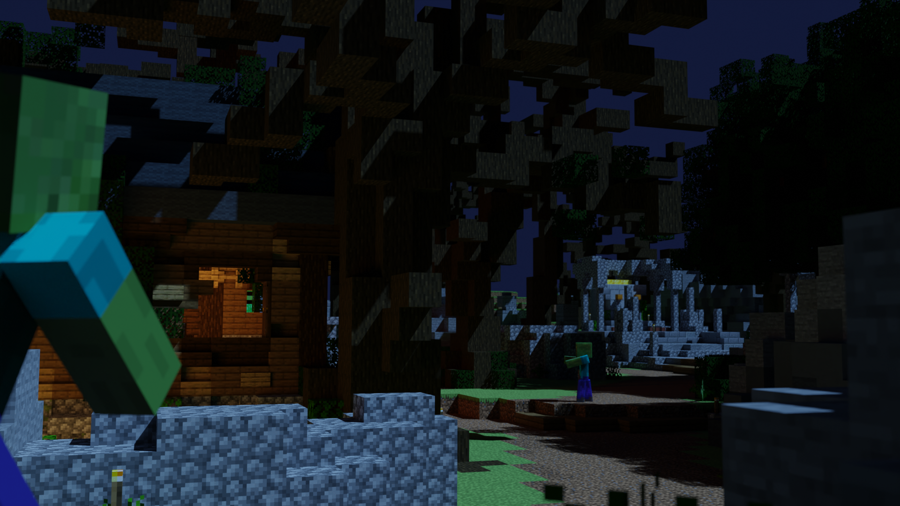

| Combat Level Required | Armor |
|---|---|
| Combat 8 | Ember Armor and Ember Rod |
| Combat 12 | End Armor |
| Combat 16 | Protector Dragon Armor, Old Dragon Armor, Unstable Dragon Armor, Wise Dragon Armor, Young Dragon Armor, Strong Dragon Armor, and Holy Dragon Armor |
| Combat 20 | Superior Dragon Armor |
| Graveyard | Spiders Den |
|---|---|
|  | |
| The End | Crimson Isle |
|
|